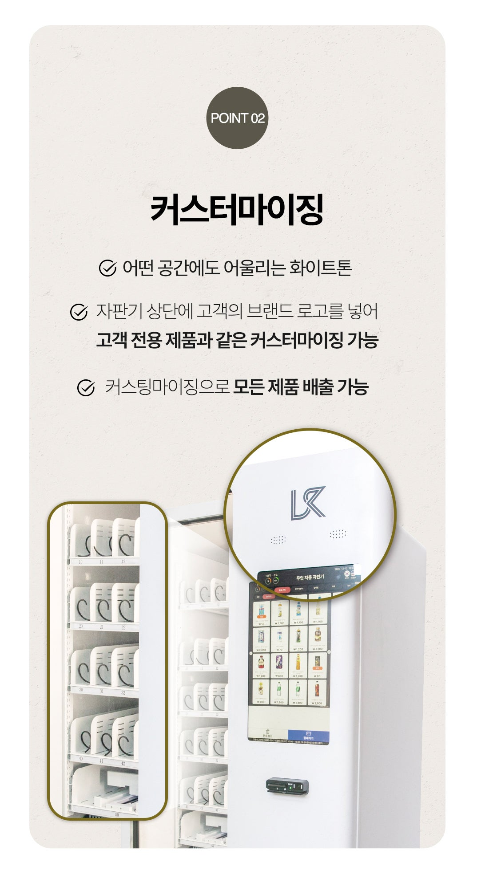
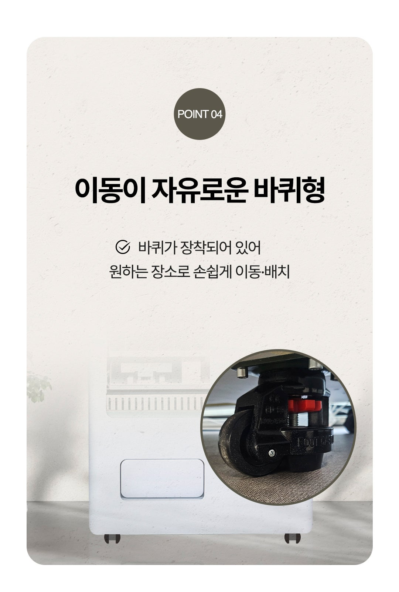
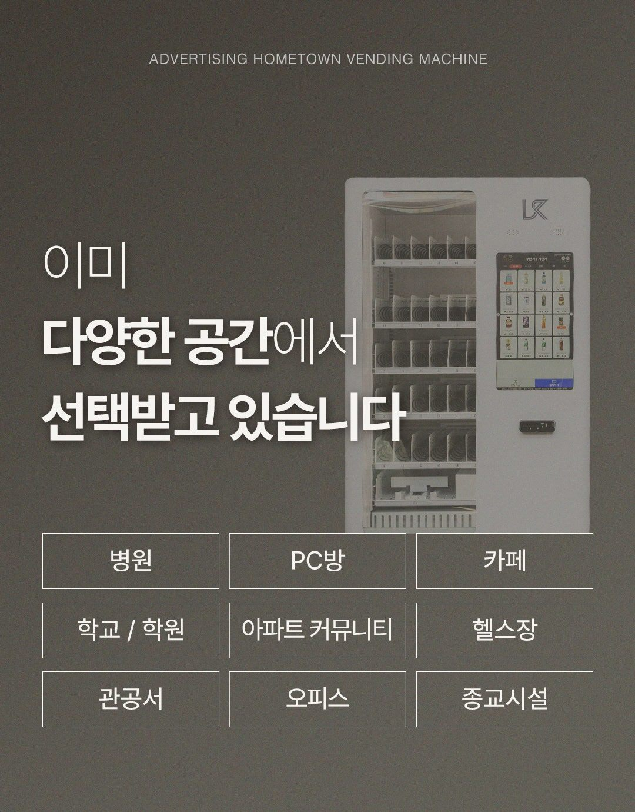
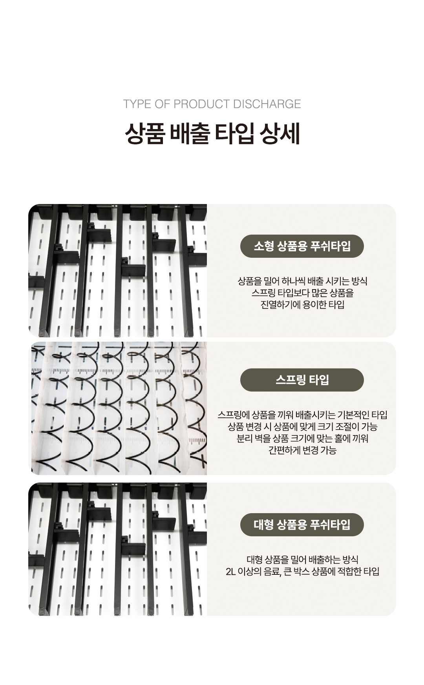
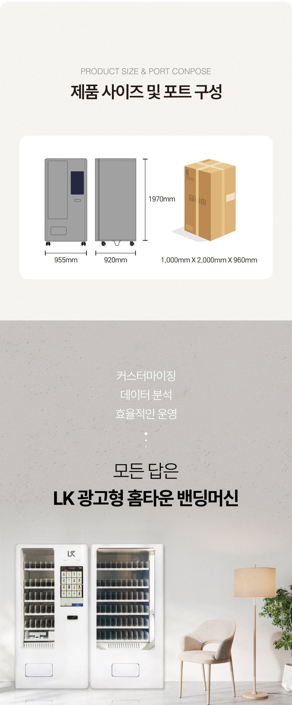
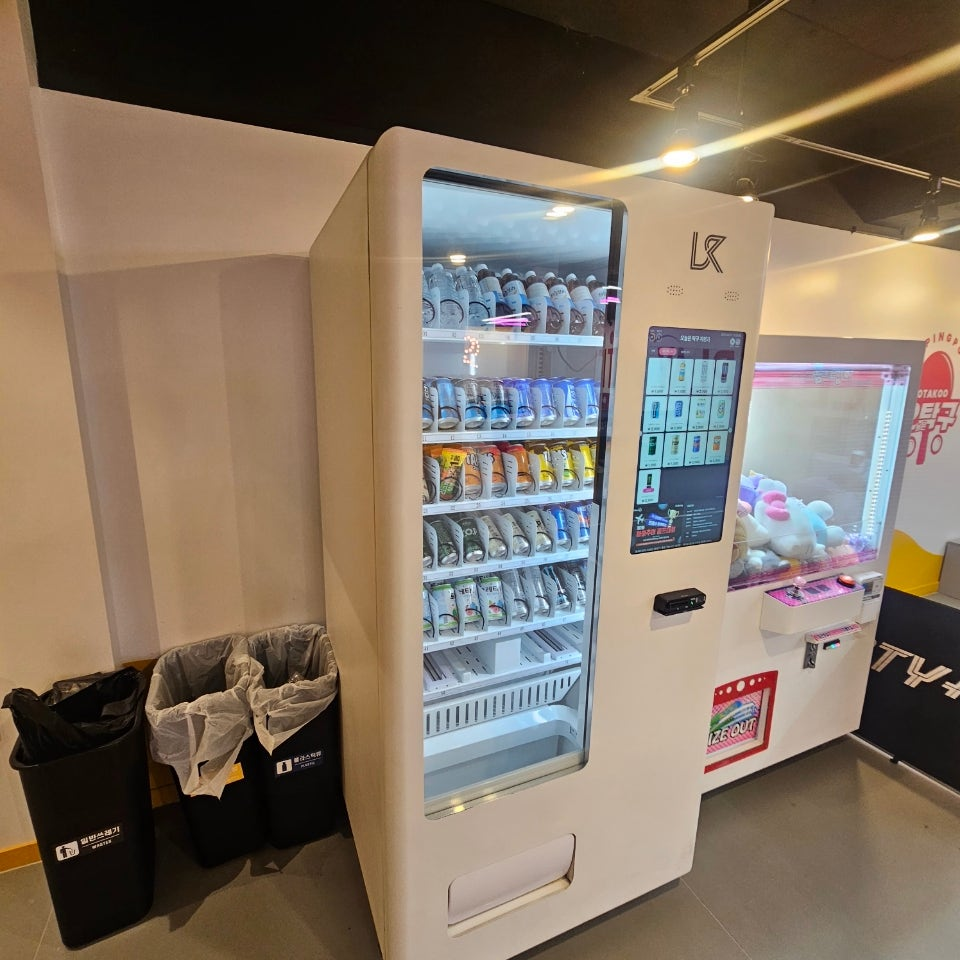
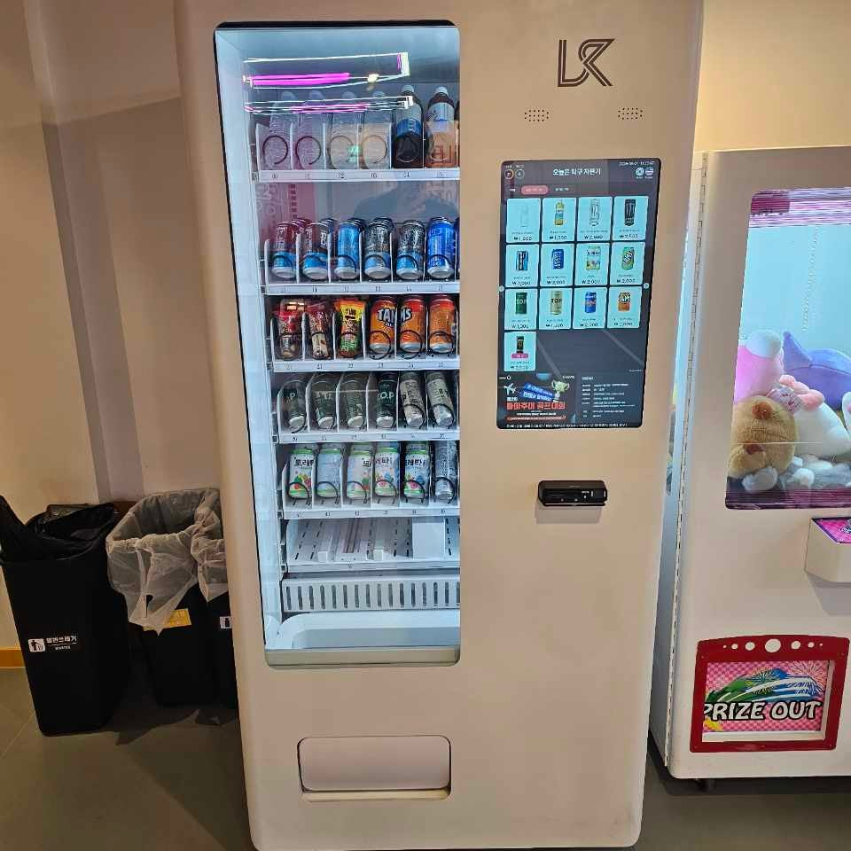

포천 무인자판기 설치를 찾고 계신가요?
포천 전역에 직원 없이 24시간 무인으로 판매·결제되는 무인자판기를 설치해 드립니다. 음료·커피·스낵·아이스크림은 물론, 생활용품·밀키트·화장품 등 다양한 품목으로 포천 입지에 맞춰 구성합니다. 소자본 창업도, 매장 앞 자투리 공간 활용도 한 번에 도와드립니다.


포천 무인자판기 종류
음료·커피 자판기, 스낵·과자 자판기, 아이스크림·냉동 자판기, 생활용품·잡화 자판기, 복합(멀티) 자판기, 멀티자판기, 멀티키오스크 등 포천 매장과 입지에 맞춰 설치합니다.



포천 무인자판기 특징
① 24시간 무인 운영으로 영업시간 제약 없음
② 인건비 부담 없이 소자본으로 시작 가능
③ 카드·삼성페이·카카오페이·QR 간편결제 지원
④ 매출·재고 원격 관리
⑤ 자투리 공간·무인매장·매장 앞 활용



포천 서비스 지역 (동 단위 방문)
포천 어느 동이든 동 단위로 방문해 무인자판기를 설치합니다.



포천 동별 무인자판기 설치
포천 전 지역을 동 단위로 방문해 무인자판기를 설치합니다. 음료·스낵·아이스크림·생활용품 자판기까지 입지에 맞춰 구성합니다.
포천 학교·지하철·공공기관 무인자판기
포천에서는 특히 학교·대학교, 지하철역·역사, 관공서·주민센터 등 공공기관, 도서관·체육관, 병원, 터미널처럼 사람이 많이 모이는 공공장소에서 무인자판기 문의가 많습니다. 유동 인구가 꾸준한 이런 장소는 음료·스낵·생활용품 자판기 운영에 특히 효과적입니다. 포천 학교 자판기·지하철 자판기·공공기관 자판기 설치도 입지 분석부터 결제 연동까지 한 번에 진행해 드립니다.


포천 무인키오스크 설치
무인자판기와 함께 무인키오스크도 많이 찾으십니다. 무인매장·무인카페·무인아이스크림·무인사진관·셀프주문 매장에서 주문부터 결제까지 한 번에 처리하는 무인키오스크를 포천 전 지역에 설치해 드립니다. 좁은 매장을 위한 미니키오스크부터 대형 스탠드형까지 매장 크기에 맞춰 구성하며, 무인키오스크 렌탈·임대도 가능합니다.
포천 무인키오스크 설치 · 포천 무인키오스크 렌탈 · 포천 무인키오스크 임대 등
업종별 무인키오스크 문의도 많습니다. 포천 골프존·스크린골프장의 무인 접수·결제 키오스크, 포천 병원·의원·한의원의 무인 접수·수납 키오스크, 포천 무인정육점·포천 무인마카롱 매장·포천 무인밀키트 매장처럼 24시간 직원 없이 운영하는 무인매장까지 업종과 매장 크기에 맞춰 키오스크를 세팅해 드립니다. 골프존 키오스크, 병원 키오스크, 정육점·마카롱·밀키트 무인매장 키오스크 모두 설치비 무료로 상담해 드립니다.
포천 멀티자판기·멀티키오스크
음료·커피·스낵·아이스크림·냉동을 한 대에 담은 포천 멀티자판기, 여러 메뉴를 한 화면에서 주문·결제하는 포천 멀티키오스크까지 한 자리에서 운영할 수 있습니다. 좁은 공간에 여러 상품을 함께 팔고 싶은 무인매장·무인카페에 특히 잘 맞습니다. 멀티자판기·멀티키오스크 모두 설치비 무료, 렌탈·임대도 가능합니다.
포천 멀티자판기 · 포천 멀티키오스크 · 포천 멀티자판기 렌탈 등
포천 자동판매기 설치 — 학교·구청·지하철역
관공서와 학교에서는 무인자판기를 자동판매기·셀프자판기라는 이름으로도 부릅니다. 입찰 공고와 계약 서류도 전부 그 이름으로 나오지요. 포천 학교자판기, 구청무인자판기, 지하철역자판기 설치를 같은 방식으로 진행하며, 공공기관 자동판매기는 입지 선정부터 서류까지 함께 챙겨 드립니다. 호텔·모텔·사우나·찜질방, 애견셀프목욕 매장, 헬스장·스터디카페처럼 사람이 오래 머무는 곳도 회전이 빠른 자리입니다.
포천 자판기 품목, 이렇게 고릅니다
가장 많이 찾으시는 품목은 음료자판기와 커피자판기, 생수자판기, 과자자판기, 컵라면자판기입니다. 사무실·오피스에는 원두커피자판기나 캡슐커피자판기가 잘 맞고, 병원·역 주변에는 화장품자판기·마스크자판기, 아파트 단지에서는 반찬자판기·계란자판기 문의도 들어옵니다. 여기에 냉동자판기(아이스크림), 라면자판기, 성인인증 방식의 주류자판기, 담파자판기까지 입지에 맞춰 구성해 드립니다.
포천 무인점포 창업과 수익
포천 무인점포·무인편의점·무인문구점·무인아이스크림 할인점 창업도 함께 도와드립니다. 소자본창업·무인창업으로 시작해 부업이나 투잡으로 부수입을 만드는 사장님이 많습니다. 자판기 창업 설치비용이 얼마나 드는지, 자판기 수익 구조는 어떻게 되는지, 직접 운영과 위탁운영이 어떻게 다른지까지 솔직하게 알려 드립니다. 구매가 부담되시면 자판기 대여로도 시작할 수 있습니다.
포천 무인자판기 렌탈·임대·신청·문의
무인자판기는 구매 외에 렌탈·임대 방식으로도 설치할 수 있습니다. 초기 비용 부담 없이 월 이용료로 시작해 무인 매출을 만들어 보세요. 포천 무인자판기 렌탈, 포천 무인자판기 임대, 포천 자판기 설치 신청, 포천 무인자판기 문의 모두 상담해 드립니다.
포천 무인자판기 렌탈 · 포천 무인자판기 임대 · 포천 자판기 렌탈 등
포천 자판기, 이런 장소에 많이 설치합니다
같은 무인자판기라도 어디에 두느냐에 따라 잘 나가는 품목이 다릅니다. 특히 문의가 많은 곳은 이렇습니다. 포천 아파트 자판기는 단지 입구·엘리베이터 홀에 두면 생활 동선에 걸려 꾸준하고, 포천 사무실 자판기·포천 오피스 자판기는 커피·생수 회전이 빠릅니다. 포천 공장 자판기는 교대 근무자를 겨냥해 야식·음료를 두껍게 채웁니다.
포천 헬스장 자판기는 이온음료·단백질 음료가 잘 나가고, 포천 스터디카페 자판기·포천 독서실 자판기·포천 PC방 자판기는 커피와 간식·컵라면 수요가 큽니다. 여가·숙박 쪽으로는 포천 캠핑장 자판기, 포천 펜션 자판기, 포천 낚시터 자판기처럼 근처에 편의점이 없는 곳일수록 회전이 좋습니다. 장소를 알려주시면 그 자리에 맞는 품목 구성까지 함께 잡아 드립니다.
포천 무인자판기 종류·품목·결제
포천 무인자판기는 부르는 이름도, 담는 품목도 다양합니다. 무인판매기·자동판매기부터 요즘은 원격 관리가 되는 스마트자판기·AI자판기, 결제를 화면에서 처리하는 키오스크 자판기까지 나옵니다. 품목은 캔음료자판기·생수자판기·커피자판기·컵라면자판기·과자자판기·아이스크림자판기·냉동식품자판기·밀키트자판기·생필품자판기가 기본이고, 자리에 따라 꽃자판기·문구자판기·화장품자판기·마스크자판기·전자담배자판기·애견용품자판기까지 구성합니다.
결제는 걱정 없습니다. 카드결제 자판기는 물론 QR결제 자판기, 삼성페이 자판기·네이버페이 자판기·카카오페이 자판기·토스페이 자판기, 신용카드 자판기까지 모든 간편결제를 한 대로 받습니다. 키오스크 결제 연동도 함께 세팅해 드립니다.
포천 무인자판기 설치 장소
자판기 문의가 많은 곳입니다. 학교 자판기·대학교 자판기·기숙사 자판기, 회사 자판기·공장 자판기·오피스텔 자판기, 병원 자판기·약국 자판기, 관공서 자판기·구청 자판기·주민센터 자판기 같은 공공기관, 지하철 자판기·역사 자판기·휴게소 자판기, 호텔 자판기·모텔 자판기·골프장 자판기·헬스장 자판기·캠핑장 자판기, 아파트 자판기·PC방 자판기, 카페 자판기·음식점 자판기·식당 자판기·편의점 자판기까지 사람이 모이는 곳이면 어디든 설치합니다. 자리만 알려주시면 그 장소에 맞는 품목을 잡아 드립니다.
포천 무인자판기 구입·가격·수익
포천 무인자판기 설치를 앞두고 가장 궁금해하시는 게 비용과 수익입니다. 무인자판기 구입·무인자판기 구매도 되고, 무인자판기 임대·무인자판기 렌탈로 초기 부담 없이 시작할 수도 있습니다. 무인자판기 가격·무인자판기 비용·무인자판기 창업비용은 기종과 품목에 따라 다르니 상담 시 정확히 안내해 드리고, 무인자판기 수익·무인자판기 유지비·무인자판기 관리방법·무인자판기 운영 노하우까지 솔직하게 알려 드립니다. 어떤 기종이 좋을지 무인자판기 추천도 자리 보고 해드립니다.
포천 무인매장·무인창업·소자본창업·부업창업으로 24시간 무인매장을 시작하려는 사장님께, 자판기 설치부터 자판기 임대·자판기 창업까지 전 과정을 함께합니다.
이런 곳에 추천합니다
학교·대학교·독서실, 지하철역·터미널, 관공서·주민센터·공공기관, 도서관·체육관, 헬스장·스터디카페, 오피스·공장, 병원·약국, 아파트 단지, 무인매장 등 유동 인구가 있는 포천 어디든 설치 가능합니다. 설치비 무료·평균 4일 이내 방문 설치·24시간 A/S로 진행합니다.

